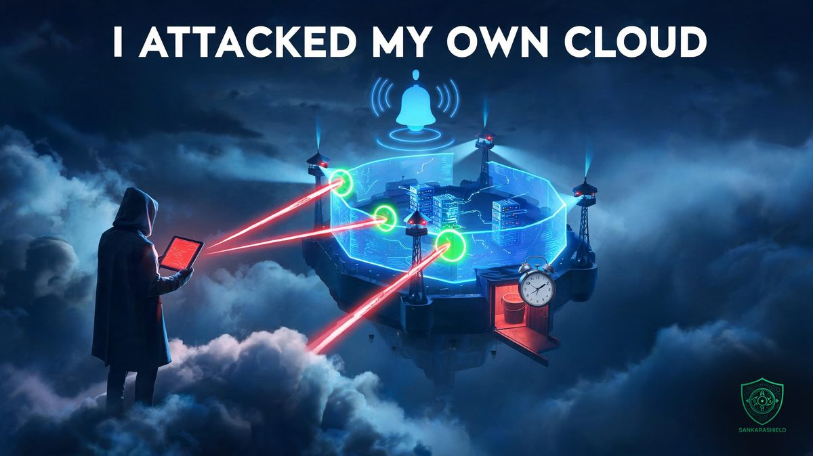

I attacked my own AWS account: what a red team exercise taught me about cloud detection.

Most cloud security projects end when the last control is deployed. This one ended with an attack. After four weeks building and hardening a serverless application on AWS, I ran an adversary emulation tool against my own account to answer one question: do these controls actually fire when someone attacks?
Three attacks were caught. One was not. That miss, and the two attempts it took to close it, is the most useful part of the whole project.
This brief walks through what was built, how it was attacked, why one detection failed, and what any team running workloads on AWS can take from it. Everything described here is public: code, threat model, runbooks and evidence.
WHAT WAS BUILT
THE APPLICATION — a small notes API on AWS: API Gateway HTTP API, a Lambda function in Python and a DynamoDB table. Users sign in through Amazon Cognito, and every route requires a valid JWT. The table is keyed by owner and note ID, so one user cannot read another user's data, even with a valid token (protection against IDOR).
INFRASTRUCTURE AS CODE — everything is defined in Terraform, with remote state in S3 and locking. Nothing was clicked into existence in the console and left undocumented.
A PIPELINE WITH NO STORED KEYS — GitHub Actions deploys to AWS through OIDC federation. The trust policy only accepts this repository's immutable subject on the main branch or the dev environment. Unit tests and Checkov must pass before any terraform apply, and every action is pinned by commit SHA.
LEAST PRIVILEGE, ENFORCED — one IAM role per Lambda. The deploy role can only touch resources named for this application, and it can only create roles that carry a permissions boundary. A manual review found a privilege escalation path that Checkov had missed: the deploy role could have created a more powerful role for itself. The permissions boundary closed it.
SEPARATION OF DUTIES — the security baseline lives in a separate Terraform root, applied only by the administrator. The application pipeline has no rights on CloudTrail, EventBridge or SNS. A compromised pipeline cannot switch off the logging that would expose it.
DETECTION AND RESPONSE
LOGGING — a multi-region CloudTrail trail with log file validation, plus data events on the bucket that holds the Terraform state.
ALERTING — CloudWatch metric filters and alarms based on the CIS AWS Foundations Benchmark: root account use, IAM policy changes, CloudTrail configuration changes, failed console logins and more. Every alarm notifies an SNS topic.
AUTO-REMEDIATION — an EventBridge rule triggers a Lambda function whenever S3 Block Public Access is removed. In a live test, the setting was restored in 18 seconds, without a remediation loop.
MEASURED COMPLIANCE — the CIS AWS Foundations v1.4 Level 1 conformance pack in AWS Config scored the account at 67% before the hardening work and 86% after. The three remaining findings are accepted on purpose and documented in a risk register, with the reason for each.
THE ATTACK
THE TOOL — Stratus Red Team, an open source adversary emulation tool maintained by Datadog. Each technique maps to MITRE ATT&CK and runs against a real AWS account, then cleans up after itself. Four techniques were chosen to match the controls built in the previous weeks.
STOPPING CLOUDTRAIL (T1562.008) — the attacker stops the trail to work without leaving records. The cloudtrail-changes alarm fired in about 80 seconds.
BLINDING CLOUDTRAIL (T1562.008) — subtler: event selectors are changed so the trail drops management and data events while still reporting that it is logging. The same alarm matched the PutEventSelectors call.
HIDDEN ADMIN USER (T1136.003) — the attacker creates a new IAM user, attaches AdministratorAccess and generates an access key, a classic persistence move. The iam-policy-changes alarm fired in about three minutes.
S3 BUCKET POLICY BACKDOOR (T1530) — the attacker rewrites a bucket policy to grant read access to an external AWS account they control. The data is never made public. It is simply shared with the wrong account. No alert fired.
WHY THE BACKDOOR WAS MISSED
THE REMEDIATION DID ITS JOB — the auto-remediation Lambda received the PutBucketPolicy event, evaluated it and took no action. That was the correct decision for what it was designed to do: restore Block Public Access. A policy that names a single external account is not "public", so there was nothing to restore.
THE ALARMS HAD NO RULE FOR IT — none of the eight alarms in place at the time watched bucket policy changes. The control set looked complete on paper, but this attack walked between two controls that each worked as designed.
THE FIRST FIX FAILED — IAM Access Analyzer is designed to flag resources shared outside the account, so its findings were routed to SNS through EventBridge. The attack was run again. The analyzer did scan the backdoored bucket, but no finding appeared after 35 minutes. The rule was kept for other resource types, but it did not solve this case.
THE FIX THAT HELD — a ninth alarm, CIS control 4.8, on S3 bucket policy, ACL, CORS, lifecycle and replication changes. Response stays manual on purpose: a bucket policy change can be legitimate, and an automatic revert could break the Terraform state or CloudTrail buckets. A runbook tells the responder exactly what to check.
TESTING THE TEST — the first re-run fired the alarm three seconds before the backdoor even existed, because Stratus's own setup step also changed a bucket. That proved nothing. The test was redone from a clean state: alarm back to OK, then only the backdoor step. The alarm fired in about 67 seconds.
WHAT THIS MEANS FOR YOUR AWS ACCOUNT
"NOT PUBLIC" DOES NOT MEAN "NOT EXPOSED" — many teams focus their S3 controls on public access. Cross-account sharing through a bucket policy is just as effective for an attacker, and much quieter. Make sure something alerts on bucket policy changes, not only on public buckets.
TEST DETECTIONS WITH REAL ATTACKS — unit tests prove that your code works. They do not prove that your alarm fires on what an attacker actually does. Tools like Stratus Red Team make this cheap enough to run on a personal account.
MEASURE DETECTION LATENCY — knowing that an alert fires is half the answer. Knowing it fires in 80 seconds rather than 30 minutes changes how you plan the response. Record the time between the attacker's action and the alert, and track it.
WATCH YOUR WATCHERS — two of the four attacks targeted CloudTrail itself. If your logging can be switched off by the same identity you are trying to monitor, your detection is only as strong as that identity's permissions. Keep the security baseline out of reach of the pipelines it watches.
VERIFY THE VERIFICATION — a test that passes for the wrong reason is worse than a failed test, because it creates false confidence. Reset to a known clean state before every re-run.
LIMITS OF THIS EXERCISE
This was a single AWS account with a single environment, on the Free plan with a 5 USD budget. GuardDuty and Security Hub were not used because of cost, and detection relies on CloudTrail metric alarms, which typically take one to five minutes to fire. Only four attack techniques were run, chosen to match the controls in place; credential access, EC2 and Lambda persistence were not tested. Results in a production environment, with more traffic and more noise, would differ.
THE BOTTOM LINE
A control you have never seen fire is an assumption, not a control. This project's most useful result was the attack that got through: it exposed the space between two controls that each behaved exactly as designed.
The full code, STRIDE threat model, incident runbooks, attack-to-detection mapping and evidence are on GitHub: https://github.com/ktf40858-stack/secure-serverless-aws
When did you last attack your own cloud account to see what your alerts would catch?